Patterns :
Séquence multi-règles
Symétrie / Paires
Rotation
Comptage décroissant
Règles multiples simultanées
Page 1 / 7
Q1 A Séquence multi-règles
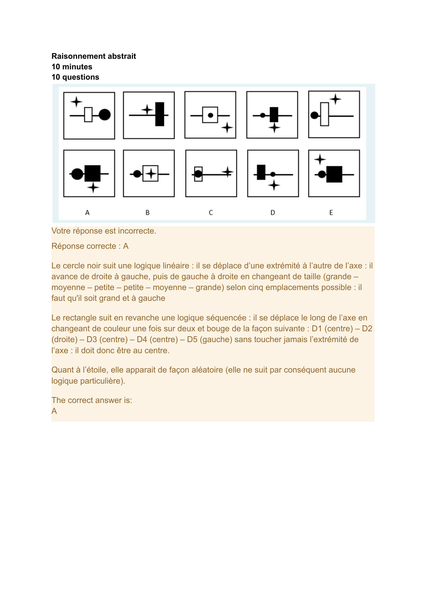
Séquence multi-règles indépendantes
Cercle noir : se déplace de droite à gauche sur l'axe en changeant de taille (grande→moyenne→petite→petite→moyenne→grande). Pour D6 : grand, à gauche.
Rectangle : suit une séquence de positions (centre→droite→centre→centre→gauche) en alternant noir/blanc. Pour D6 : centre, noir.
Étoile : aléatoire — pas de règle à déduire.
Rectangle : suit une séquence de positions (centre→droite→centre→centre→gauche) en alternant noir/blanc. Pour D6 : centre, noir.
Étoile : aléatoire — pas de règle à déduire.
Page 2 / 7
Q2 C Symétrie paires
Q3 D Rotation multi-vitesse
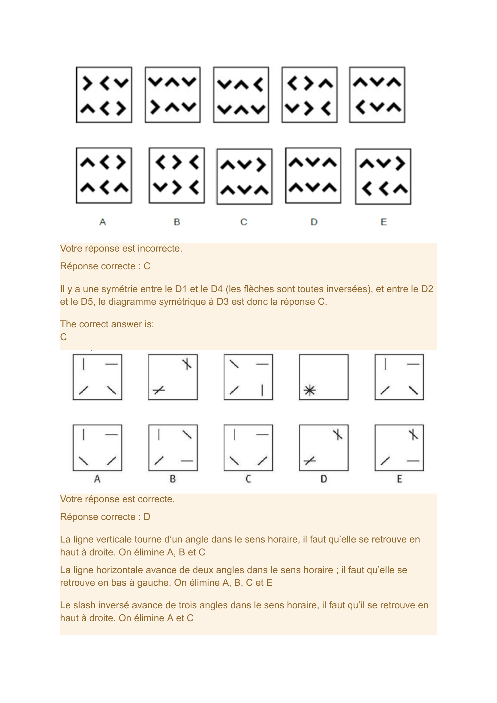
Q2 — Symétrie par paires (flèches)
D1 est symétrique à D4 (toutes les flèches inversées), D2 est symétrique à D5. Le diagramme symétrique à D3 est donc la réponse C.
Q3 — Rotation à vitesses différentes (4 lignes)
Ligne verticale : +1 angle/tour sens horaire → haut-droite. Ligne horizontale : +2 angles → bas-gauche. Slash inversé : +3 angles → haut-droite. Slash droit : reste en place. Seul D satisfait toutes les conditions.
Page 3 / 7
Q4 B Symétrie verticale paires
Q5 C 2 mini-séries
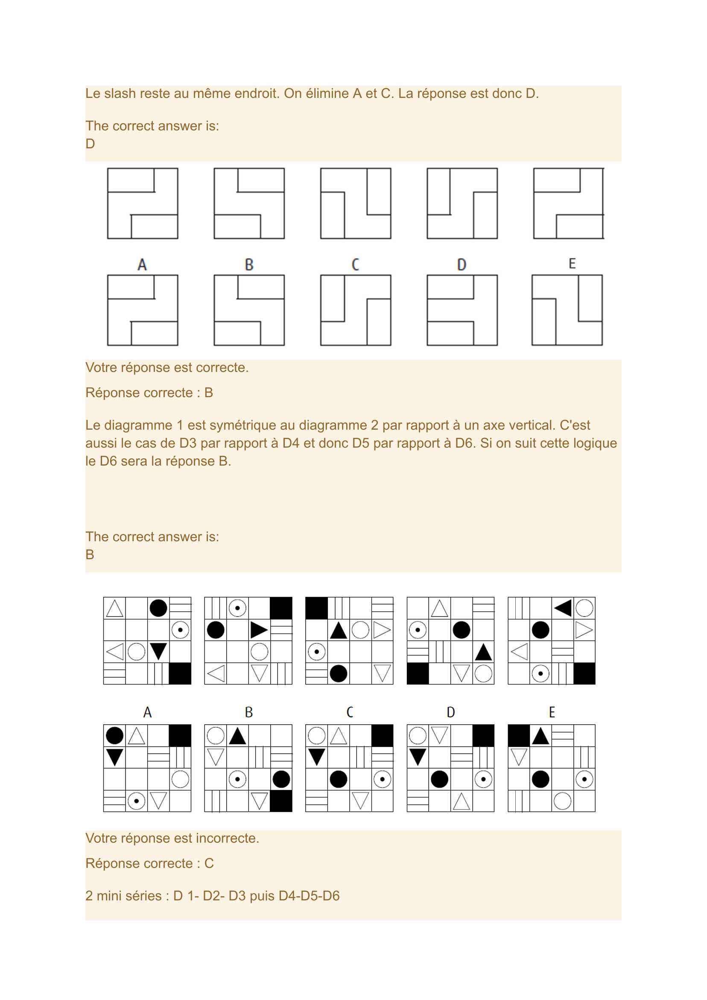
Q4 — Symétrie verticale par paires (formes en L)
D1 est symétrique à D2 par rapport à un axe vertical. Idem D3↔D4, D5↔D6. En suivant cette logique, D6 est le miroir de D5 → réponse B.
Q5 — 2 mini-séries de 3 diagrammes
Sur les 3 premiers diagrammes, l'ensemble bascule d'¼ de tour vers la gauche. Ce mouvement se reproduit sur les 3 diagrammes suivants → réponse C.
Page 4 / 7
Q6 B Alternance noir/blanc multi-niveaux
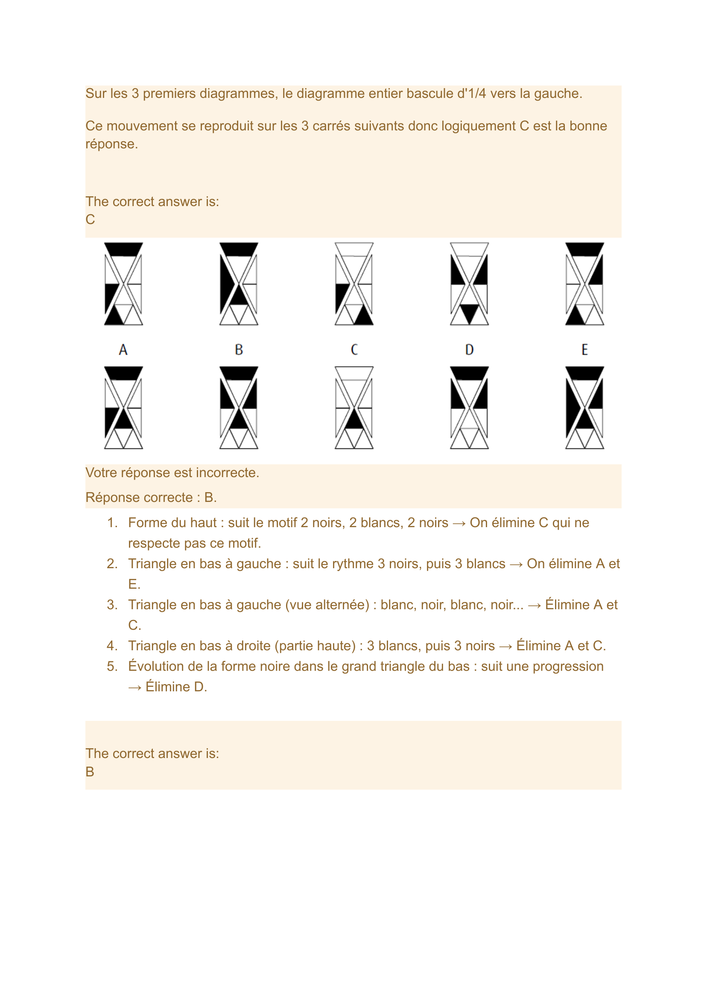
Q6 — Alternance noir/blanc sur 3 parties indépendantes
Forme du haut : motif 2 noirs, 2 blancs, 2 noirs → élimine C.
Triangle bas-gauche : 3 noirs puis 3 blancs → élimine A et E.
Triangle bas-droite (partie haute) : 3 blancs puis 3 noirs → élimine A et C.
Évolution de la forme noire dans le grand triangle : progression → élimine D.
→ Seul B satisfait toutes les conditions.
Triangle bas-gauche : 3 noirs puis 3 blancs → élimine A et E.
Triangle bas-droite (partie haute) : 3 blancs puis 3 noirs → élimine A et C.
Évolution de la forme noire dans le grand triangle : progression → élimine D.
→ Seul B satisfait toutes les conditions.
Page 5 / 7
Q7 C Comptage décroissant
Q8 B Symétrie paires + inversion couleur
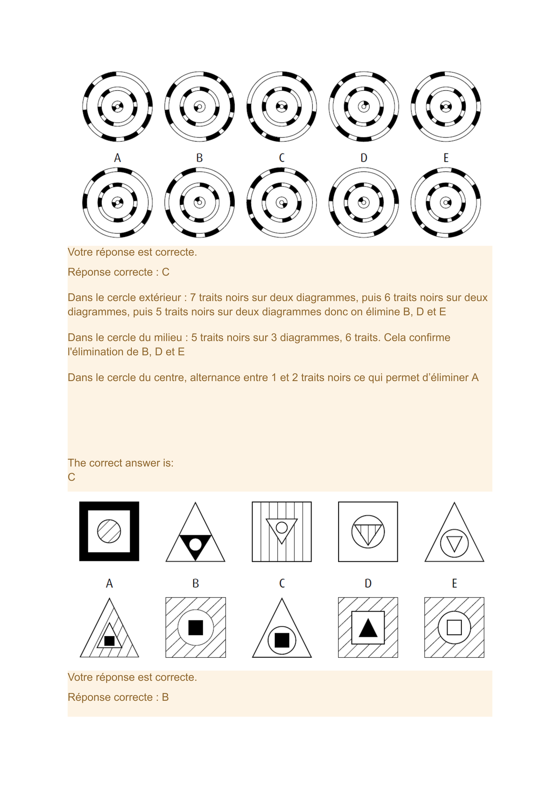
Q7 — Cercles concentriques, segments décroissants
Cercle extérieur : 7 traits sur 2 diagrammes → 6 sur 2 → 5 sur 2 → élimine B, D, E.
Cercle du milieu : 5 traits sur 3 diagrammes → 6 traits → confirme l'élimination.
Cercle centre : alternance 1 / 2 traits → élimine A. → C est correct.
Cercle du milieu : 5 traits sur 3 diagrammes → 6 traits → confirme l'élimination.
Cercle centre : alternance 1 / 2 traits → élimine A. → C est correct.
Q8 — Symétrie paires + inversion couleur
Symétrie des grandes formes : D1↔D6, D2↔D5, D3↔D4 → élimine A et C.
Les 2 formes centrales s'inversent dans chaque paire → élimine D.
La couleur extérieure devient celle du centre → élimine E. → B est correct.
Les 2 formes centrales s'inversent dans chaque paire → élimine D.
La couleur extérieure devient celle du centre → élimine E. → B est correct.
Page 6 / 7
Q9 C Flèche = direction de déplacement
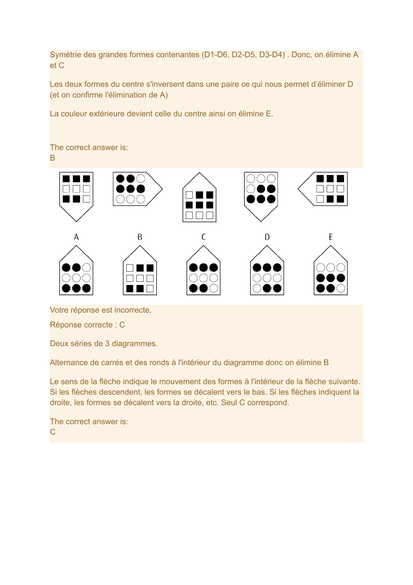
Q9 — La flèche indique le sens de déplacement
2 séries de 3 diagrammes. Les formes à l'intérieur (carrés ou ronds — ils alternent) se déplacent dans le sens indiqué par la flèche du diagramme suivant. Si la flèche pointe à droite → les formes se décalent à droite. Seul C correspond.
Page 7 / 7
Q10 C 5 règles simultanées
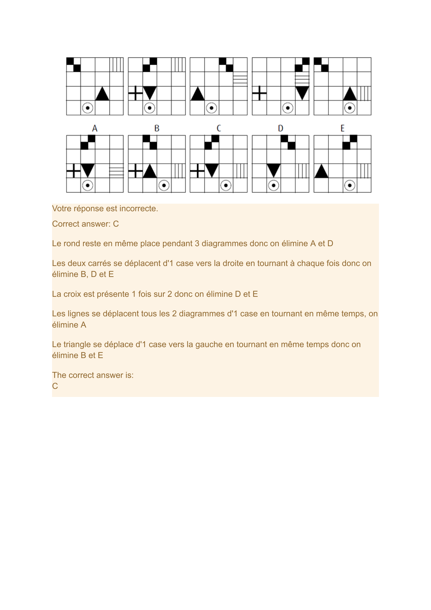
Q10 — Élimination par 5 règles indépendantes
Rond : reste en place 3 diagrammes → élimine A et D.
Carrés : se déplacent d'1 case à droite en tournant → élimine B, D et E.
Croix : présente 1 fois sur 2 → élimine D et E.
Lignes : se déplacent tous les 2 diagrammes d'1 case en tournant → élimine A.
Triangle : se déplace d'1 case à gauche en tournant → élimine B et E.
→ Seul C satisfait toutes les règles.
Carrés : se déplacent d'1 case à droite en tournant → élimine B, D et E.
Croix : présente 1 fois sur 2 → élimine D et E.
Lignes : se déplacent tous les 2 diagrammes d'1 case en tournant → élimine A.
Triangle : se déplace d'1 case à gauche en tournant → élimine B et E.
→ Seul C satisfait toutes les règles.
Section abstraite du test 1 — 5 questions sur 6 pages. Les corrections sont incluses dans les images.
Page 1/6 (p.30 du PDF)
Q16 D Symétrie paires
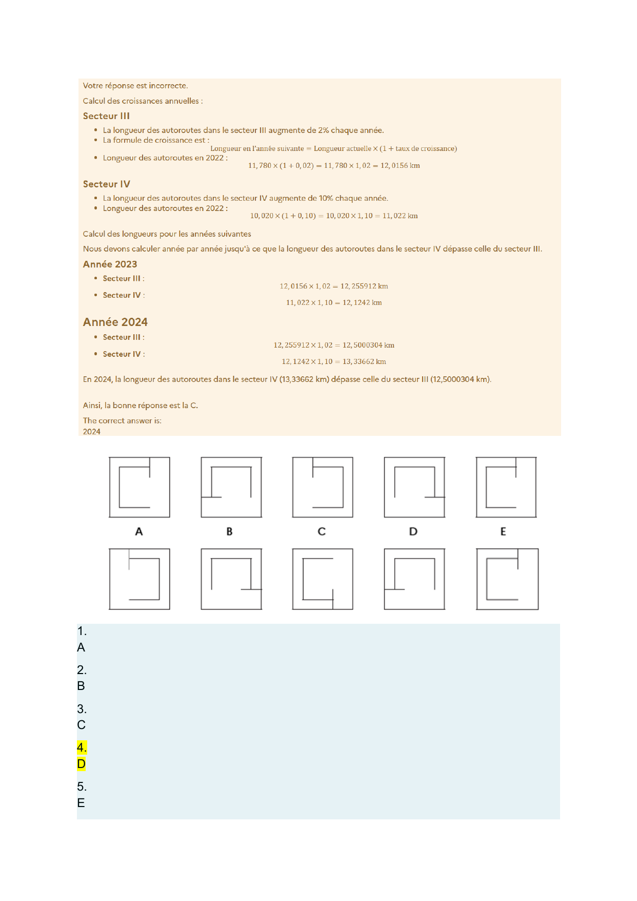
Symétrie par paires (formes en L)
Symétrie par paire par rapport à un axe vertical entre les diagrammes 1&3, 2&4, 3&5, 4&6. → D
Page 2/6 (p.31 du PDF)
Q16 fin
Q17 A Rotation 45°
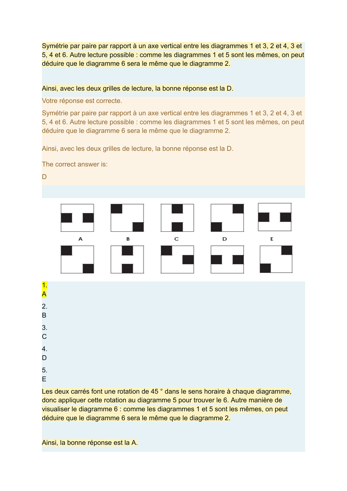
Q17 — Rotation de 45° par diagramme
Les 2 carrés font une rotation de 45° dans le sens horaire à chaque diagramme. Appliquer au D5 → D6 = A. Alternative : D1 et D5 sont identiques → D6 = D2 = A.
Pages 3-4/6 (p.32-33 du PDF)
Q18 C
Q19 C Suite linéaire
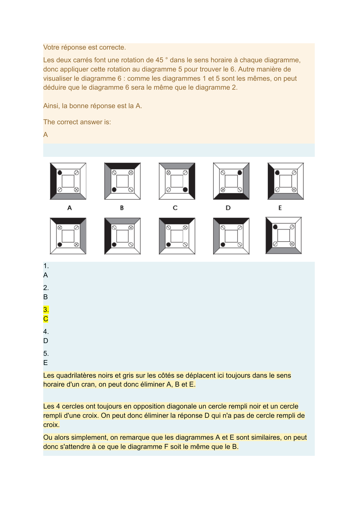
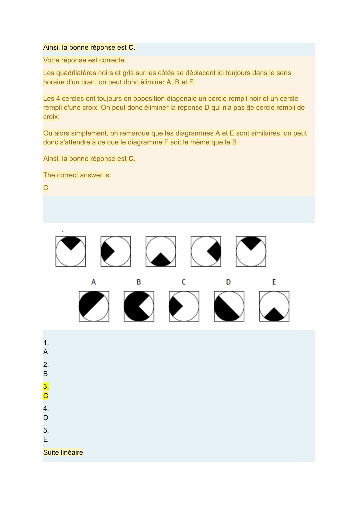
Q18 — Quadrilatères + cercles en opposition
Les quadrilatères noirs/gris se déplacent dans le sens horaire d'un cran. Les 4 cercles ont toujours en opposition diagonale un cercle rempli noir et un rempli d'une croix. → C
Q19 — Suite linéaire (portion noire croissante)
La portion noire du cercle augmente progressivement selon une suite linéaire régulière. → C
Pages 5-6/6 (p.34-35 du PDF)
Q20 B Point noir + décalage formes
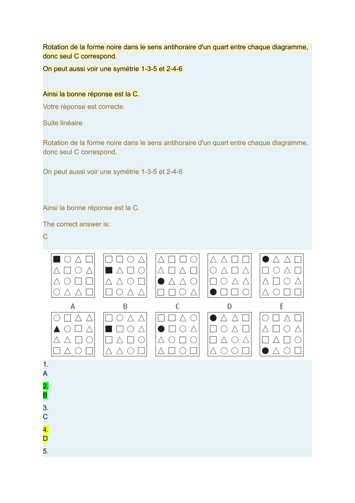
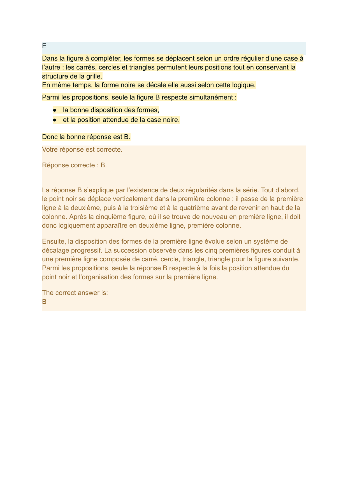
Q20 — 2 règles : point noir + décalage de formes
Point noir : se déplace verticalement dans la col. 1 (ligne 1→2→3→4→1...) → doit être en ligne 2, col. 1.
Formes ligne 1 : décalage progressif → D6 doit avoir : carré, cercle, triangle, triangle en ligne 1.
Seul B respecte les deux contraintes simultanément.
Formes ligne 1 : décalage progressif → D6 doit avoir : carré, cercle, triangle, triangle en ligne 1.
Seul B respecte les deux contraintes simultanément.
Section abstraite du test 2 — 5 questions sur 7 pages. Les corrections sont incluses dans les images.
Page 1/7 (p.31 du PDF)
Q16 B Cercle extérieur alternant
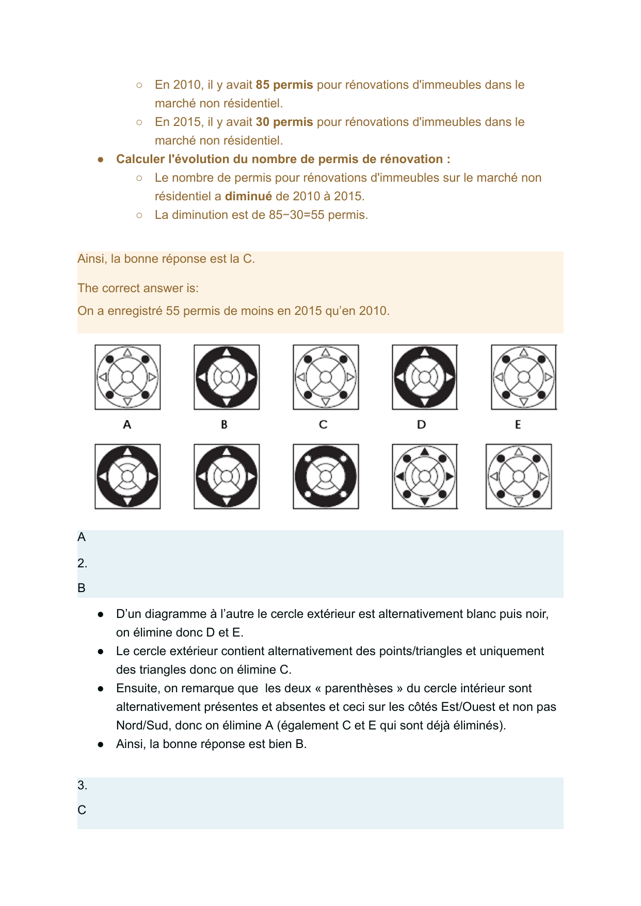
Q16 — Cercle extérieur alternant + contenu
Le cercle extérieur alterne blanc/noir. Le contenu (points/triangles) alterne aussi. Les parenthèses du cercle intérieur apparaissent alternativement Est/Ouest. → B
Pages 2-3/7 (p.32-33 du PDF)
Q17 A Camembert rotation
Q18
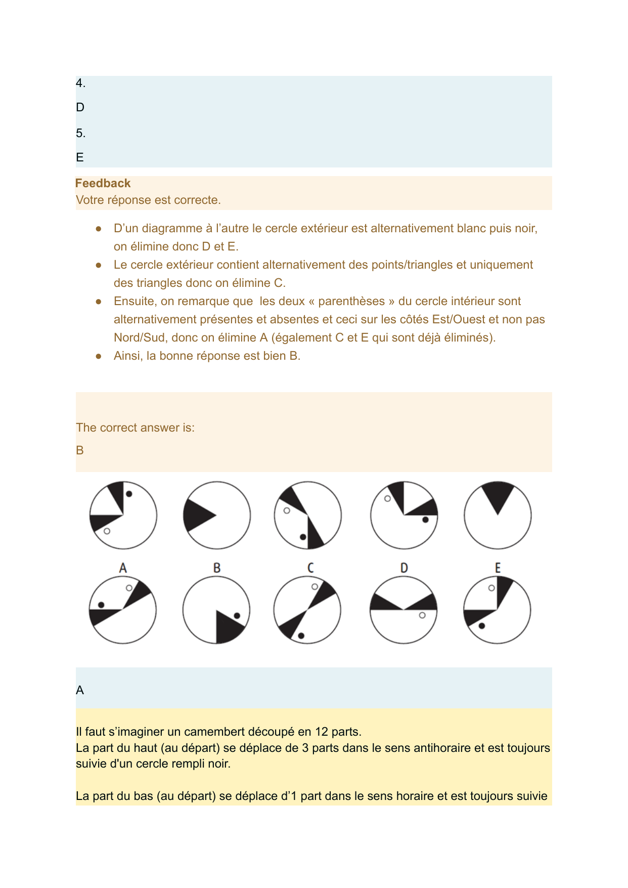
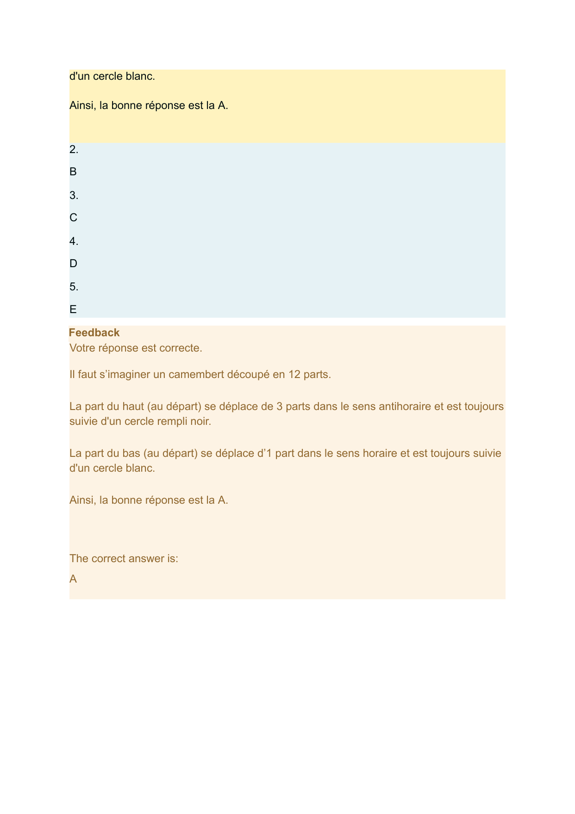
Q17 — Camembert : 2 parts en rotation indépendante
Imaginer un camembert divisé en 12 parts. La part du haut se déplace de 3 parts dans le sens antihoraire (toujours suivie d'un cercle noir). La part du bas se déplace d'1 part dans le sens horaire (toujours suivie d'un cercle blanc). → A
Pages 4-5/7 (p.34-35 du PDF)
Q18 à Q19
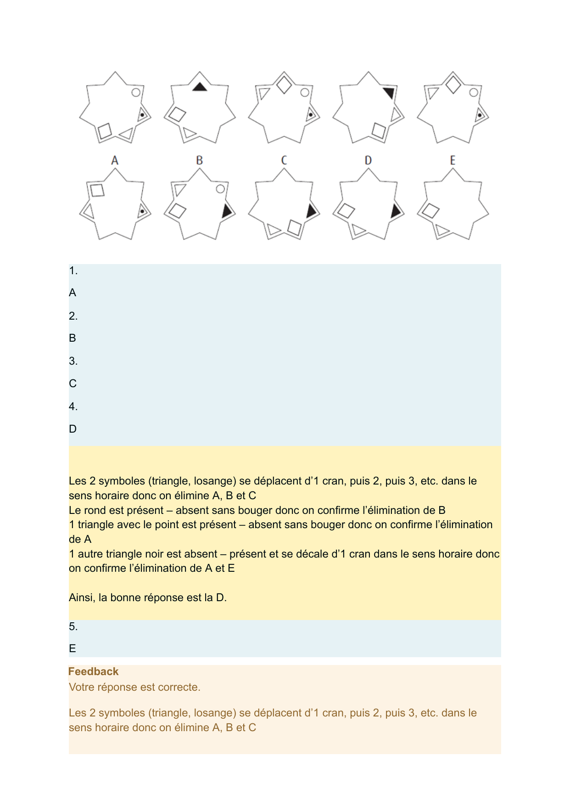
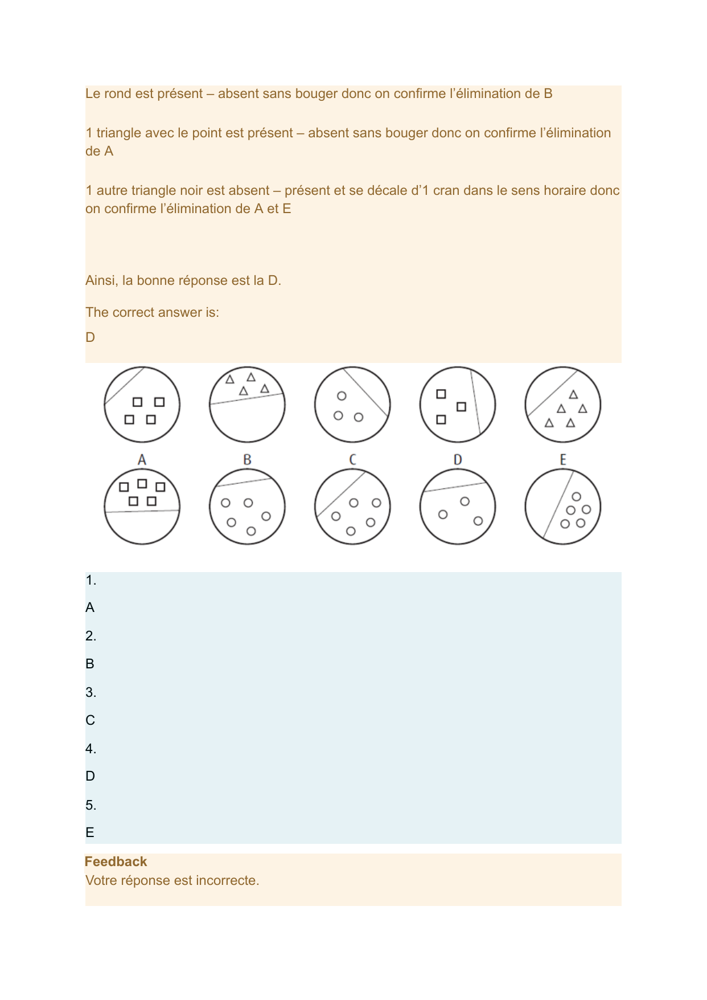
Pages 6-7/7 (p.36-37 du PDF)
Q19 à Q20
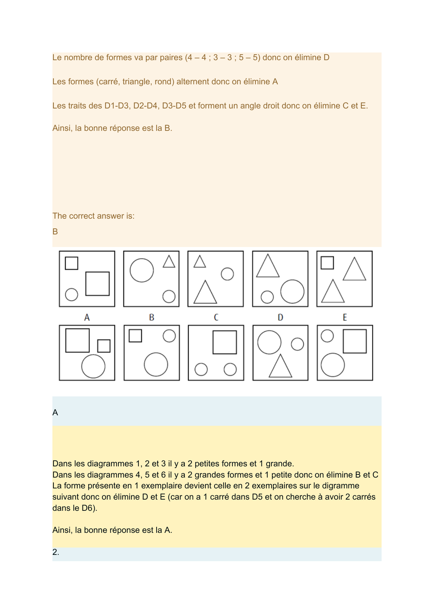
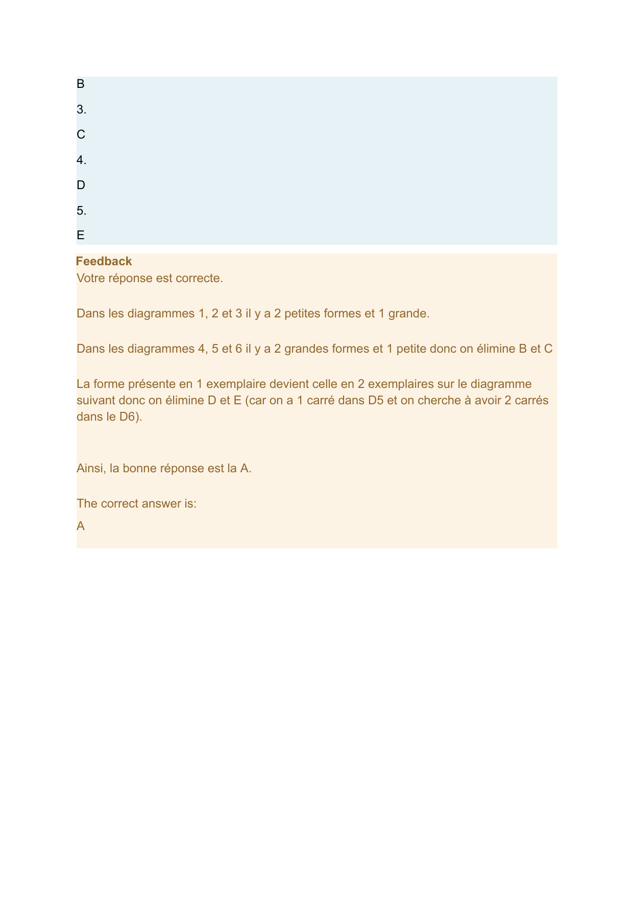